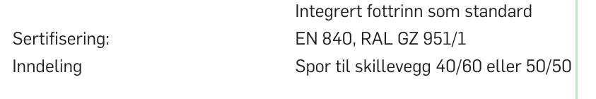
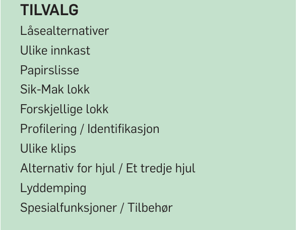

DR-003
Dokumentgjennomgang · 13. oktober 2026
Produktdatablad MGB 240 PWS,
lest som vedlegg til tilbudet.
Databladet Strømbergs publiserer for MGB 240 PWS, og katalogen det hører til, er lest mot Bilag 2. Ingenting her er en poengsetting. Det er oppdragsgiver som gir poeng.
MGB 240 PWS. Teknisk datablad, 3 sider, filen datert 2025.
PWS avfallsbeholdere. Katalog, 24 sider, filen datert 2025.
Åtte størrelser, 80 til 1000 liter, har hvert sitt datablad.
Metode
Bilag 2 stiller seksti nummererte krav. Tjueseks gjelder leveranseplan, opsjonspris eller reklamasjonsprosedyre, som intet datablad besvarer. Trettifire gjenstår.
Besvart betyr at en leser kan kontrollere det i dag. Delvis betyr at temaet er nevnt uten at noe forplikter. Mangler betyr ingenting å peke på.
Resultatet
Tolv av
trettifire
kan
besvares.
Krav 1, 2, 6, 7, 9, 10, 11, 13, 14, 18, 22, 27.
Krav 3, 4, 8, 15, 16, 17, 23, 25, 41, 46, 57, 60.
Krav 5, 12, 19, 20, 21, 24, 26, 28, 47, 58.
Tjueåtte av de trettifire ber leverandøren bekrefte eller beskrive, og de svarene skrives nye til tilbudet. Dette er hva en evaluator kan kontrollere i materialet bak dem.
Funn / Ark 2
DR-003
Fire ting en evaluator ser først.

Funn 01 / Krav 57, A · klima 30 av 100
Taket står i katalogen.
«Forpliktende minimumsandel PCR (vekt-%) oppgis separat…»
Katalogen sier opptil, som er et tak. Ingen av de åtte databladene nevner resirkulert plast.

Funn 02 / Krav 5 og 3, begge A
EN 840, men ikke del 1-6.
«…i tråd med kravene i NS-EN 1501-5.»
Sertifiseringen står på hvert datablad. Ingen del er nevnt, og NS-EN 1501-5 står ingen steder.

Funn 03 / Krav 28, A
Ti tilvalg, ingen reservedeler.
«Som minimum skal lokk, lokkplugger, komplette hjulsett og akslinger tilbys.»
Lokkplugger, hjul og aksling er oppgitt som tekniske data. Ingen av dem tilbys som del.

Funn 04 / Krav 41, A
Tre farger, ingen kode.
«Fargen på beholderne (uten lokk) skal være mørk grå, RAL 7016, eller tilsvarende.»
Databladet viser fargene som felt. Et felt kan ikke sammenlignes med en RAL-kode.
Hjuldiameter, SVHC og nordisk klima er besvart. Det som mangler er stort sett tall som ikke står noe sted.